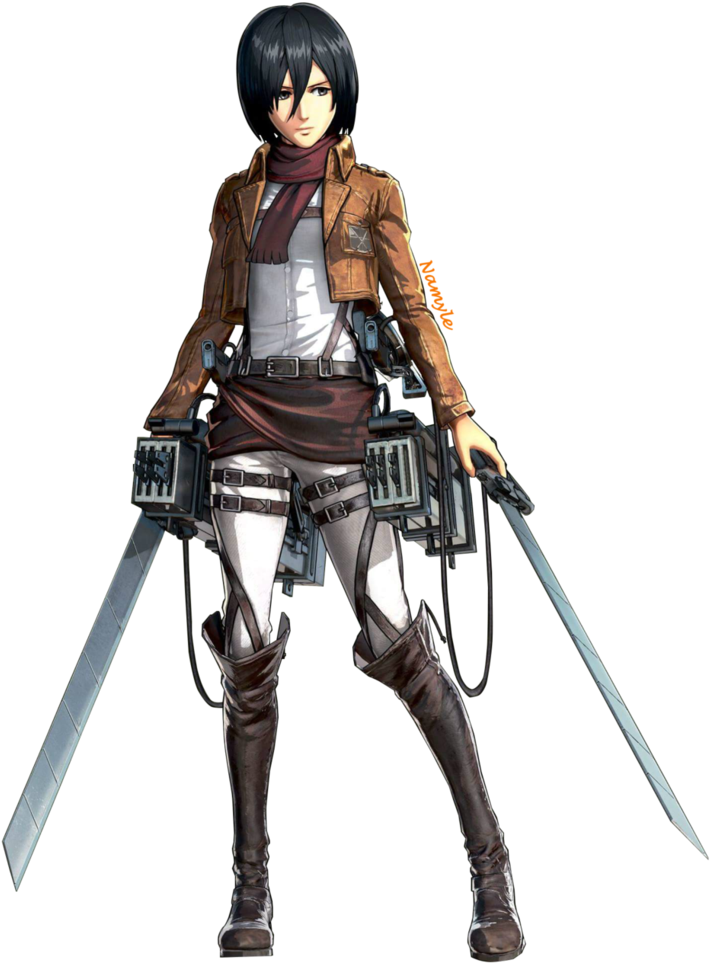

After her parents were murdered by human traffickers, Mikasa was rescued by
Eren Yeager and lived with him and his parents, Grisha and Carla, before the
fall of Wall Maria. She is the last descendant of the Shogun clan that stayed on
Paradis Island, thereby related to the Azumabito family, and holds significant
political power in Hizuru.Mikasa is a fairly tall and well-toned woman. She is of
partial Asian heritage, with pale skin, gray eyes, and shaggy black hair that was
long until she cut it to chin-length. By the year 854, her hair is shorter and cut
up to the back of her neck, though she simultaneously wears noticeably longer bangs.
She bears a tattoo of the Azumabito family crest on the outside of her right wrist.
There is a small scar below her right eye, which was due to an injury delivered by
Eren's Titan during the Battle of Trost District.